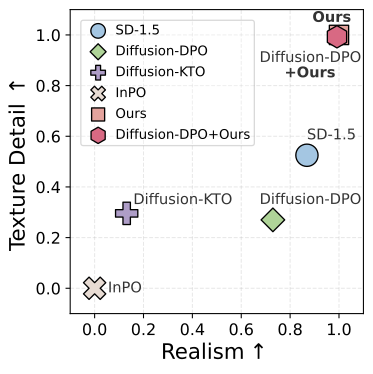
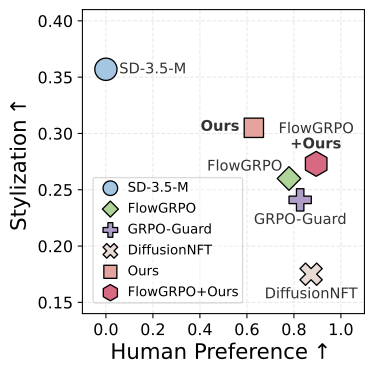
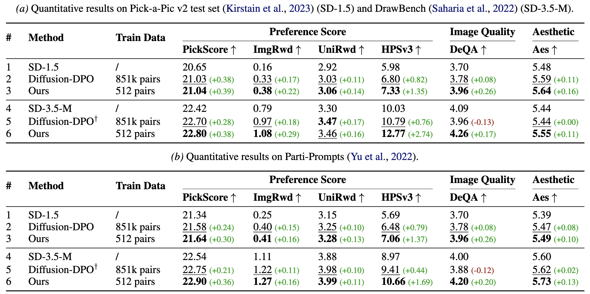
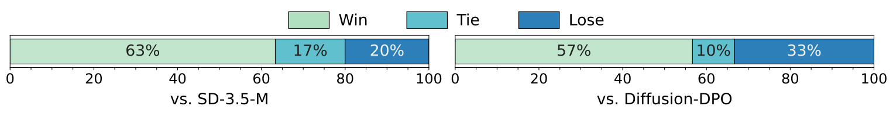
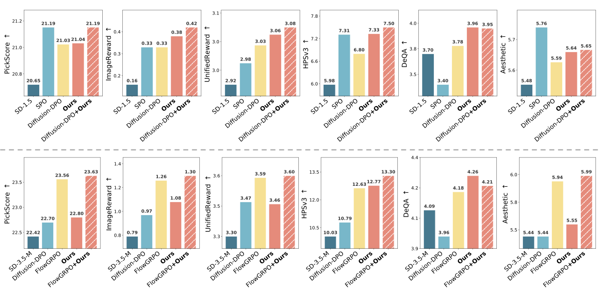

Preference alignment aims to guide generative models by learning from comparisons between preferred and non-preferred samples. In practice, most existing approaches rely on preference pairs constructed from model-generated images. Such supervision is inherently relative and can be ambiguous when both samples exhibit artifacts or limited visual quality, making it difficult to infer what constitutes a truly desirable output. In this work, we investigate whether real data can serve as an alternative source of supervision for preference alignment. We adopt a data-centric perspective and study a curation strategy that treats real images as reference points and constructs preference signals by contrasting them with generated or perturbed samples, without requiring manually annotated preference pairs. Through empirical analysis, we show that real-data-based supervision provides effective guidance for aligning diffusion models and achieves performance comparable to existing preference-based methods. Our results suggest that real data offers a practical and complementary source of supervision for preference alignment and highlight directions of label-efficient alignment strategies.
Most existing preference alignment methods rely on pairwise comparisons between generated samples, where one image is labeled as preferred over another. While effective, this formulation carries two limitations that are easy to overlook.
The supervision signal is inherently constrained by the quality of the generators that produce the candidates. Even samples labeled as preferred may still contain artifacts, lack realism, or exhibit limited stylistic diversity. The model can therefore only learn to favor the less flawed of two imperfect options, rather than what a genuinely desirable output looks like.

Different alignment objectives improve different aspects, but rarely deliver balanced gains. Objectives that target specific visual properties (e.g., smoothness or texture consistency) do not consistently improve overall realism across diverse prompts, while reward-based approaches reach higher preference scores but tend to collapse toward more uniform stylistic patterns.


We present a data curation strategy that constructs structured supervision signals by contrasting real images with controlled variations, without using explicit preference labels. The idea is to first identify a set of images that represent desirable visual properties, and then introduce controlled degradations to create informative contrasts. This lets preference-related signals be derived directly from real data, while keeping the learning process grounded and interpretable.

A practical consideration is that real images and their perturbed versions may differ from the model's initial generation distribution, which can make direct preference optimization less stable. To account for this, we adopt a two-stage alignment strategy that incorporates real-data-based signals gradually. The first stage encourages the model to move closer to the distribution represented by the reference images; the second stage introduces structured comparisons using the constructed contrastive samples.
A Diffusion-DRO (inverse-RL) objective pulls the model toward the reference distribution:
A Diffusion-DPO objective, warm-started from Stage 1, learns from the real-vs-perturbed contrasts:
Real-data-based supervision aligns diffusion models effectively, reaching quality comparable to methods that rely on manually annotated preference pairs.


Real-data-based alignment is complementary to existing preference-based methods: combining the two yields further gains across benchmarks and backbones.
